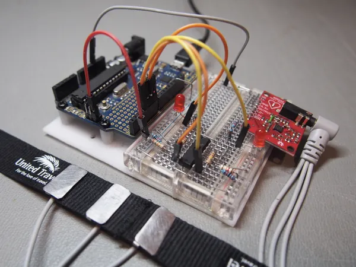
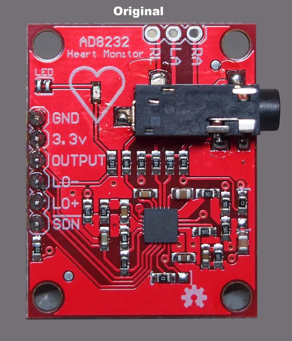

Week 11: Final Project Integration
Background
What I originally proposed in class was my recent improvement on my Heart Rate Monitor as stated here. The feedback I integrated from my MVP until now was having a consistent bluetooth connection via the "Connect" button on my website and properly calibrating the heart rate signals so that they measured and reflected well on the website. That being said.... I've decided to switch gears! I talked with Kasia who is working on our original idea: EEG. I'm switching gears to 1) build and understand the circuit, 2) signal denoise, and 3) make any final touches. I think this is doable in two weeks, uses the same principals from my heart rate monitor project, and I feel excited about it!
Circuit



The first step is to properly wire up the circuit based on some initial instructions available here. It requires modifying a heart rate board, so that instead of reading one signal (like EKG) it takes and compares two signals (like EEG). This also requires integrating real electrodes on a headband and adding a battery so that the computer doesn't create more noise.
Materials: 1 only AD8232 ECG heart monitor module, 1 only Arduino Uno R3, 1 only LM324 quad-op-amp, 1 only 220K ohm resistor 1/8 watt, 2 only 120K ohm resistors 1/8 watt, 1 only 15K ohm resistor 1/8 watt, 2 only 10K ohm resistors 1/8 watt, 1 only 1200 ohm resistor 1/8 watt, boards wires headbands
Code and Signal Denoising
Code
// ----- Definitions
#define OPEN LOW // Comparator output is LOW when eye is open
#define CLOSED HIGH // Comparator output is HIGH when eye is closed
#define ON HIGH // Comparator output is LOW when eye is open
#define OFF LOW // Comparator output is HIGH when eye is closed
// ----- Wiring
const byte LeftEye = 4; // Comparator output for left eye on pin D4
const byte RightEye = 5; // Comparator output for right eye on pin D5
const byte LeftLed = 6; // LED for left eye connected to pin D6
const byte RightLed = 7; // LED for right eye connected to pin D7
Above is some initial code from the website that will provide a good starting point, but much more signal denoising is needed. I will need to 1 - define pins, 2 - refine a digital interface, and 3 - work on additional components. Additional components include adding a Butterworth notch filter to get rid of 60hz noise from the computer and integrating a Mortlet Wave Transform to be able to read EEG data.
Headband and Final Touches

We need to order actual electrodes and electrode gel, in addition to trying out different locations on the head. The headband will help keep everything in place. Once the digital interface is working and clean, I'd like to sew the wires into the headband, and possibly think about adding the boards into the headband too if I have time. Overall, I want clean housing for the device!
Timeline
- 5/1-5/3 Rewire heart rate monitor and order electrodes headband
- 5/4-5/9 Get a digital interface properly working to see difference in eyes opened vs eyes closed/li>
- 5/10-5/12 Finish housing, final touches, practice presentation